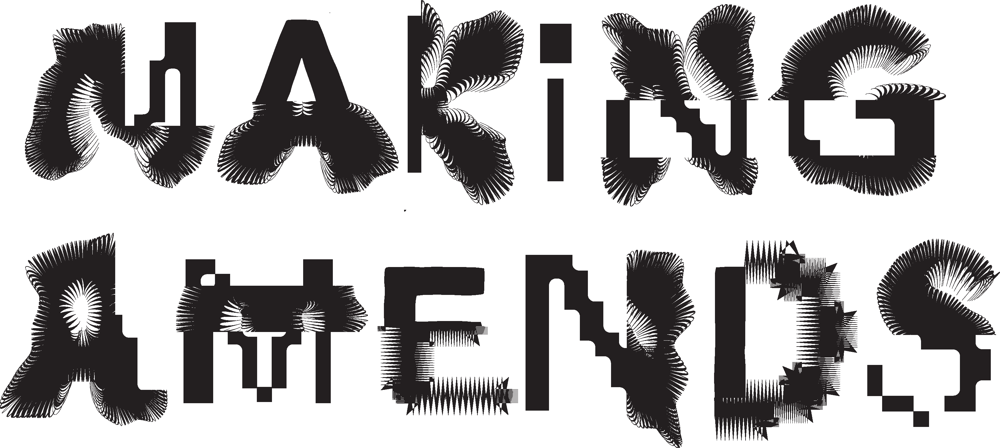

COMMUNITY SKIRT
Cut and Sewn by Diego Allison

This skirt intends to grow into a collection of additions made by individual collaborators. Utilizing an old circle wrap skirt as the base, each collaborator adds elements that create variety and add interest to the piece. With the large amount of additions anticipated, the skirt is viewed as more a tapestry, although it still could technically function as a skirt.